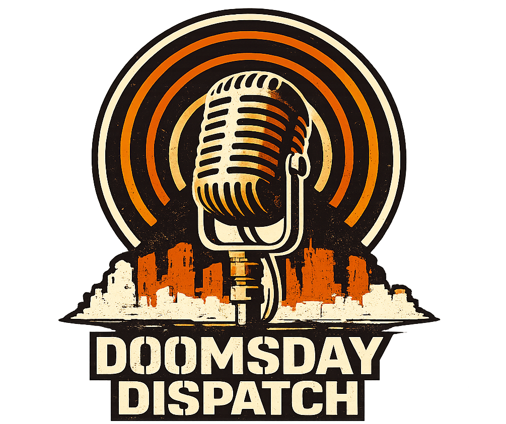

Frequency Chase
Dispatch Vibes
Stack Hunter
Noisy but Lucky
Level 0/12 · Offline
Kanal: Noise
Qualitaet: 0%
Combo 0 · Heat 0
Dispatch Lock
STACK Lock
Empfang
Energie
Batterie-Reserve
VFO Tuning50.0 MHz
Hauptregler // Frequenzsuche
Feinregler // Drift
0.0Band driftetJammer aktiv100.0
Preset-Regler // Display Setup
Handle
Wavefox
Faction
Maker
Theme
Field Unit
Starte einen Run und tune live auf klare Signale.
Naechster Schritt: Run Start.
LCD Status
FREQ 50.00 MHz
Zwischenrunde // Utility Shop
Bounty Board
Kein Vertrag aktiv.
Aktive Entscheidung
Kein Event aktiv. Tune den Regler, bis ein Kanal lockt.
Konsequenz A: -
Konsequenz B: -